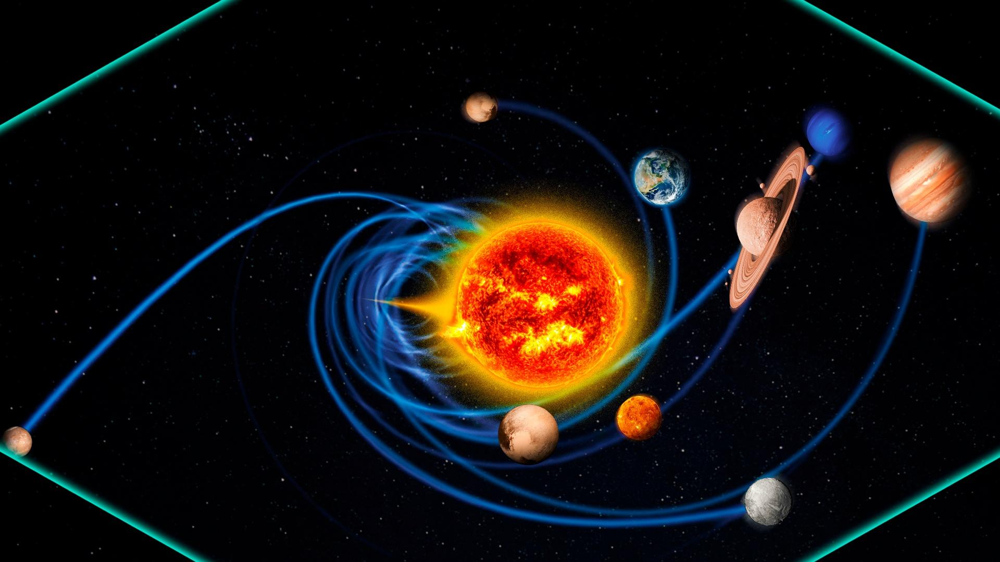
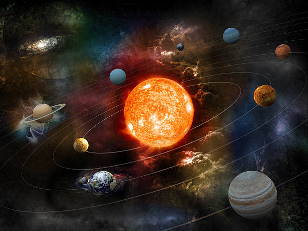
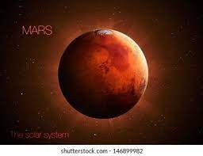

HOME PLANETS IMAGES
Solar System
The Solar System is a fascinating place, filled with diverse celestial bodies. Let's explore some of its wonders:
Solar System Overview
The Solar System consists of the Sun and the celestial objects that are bound to it by its gravity, including
eight planets and their moons, dwarf planets, comets, and other space debris. It is located in the Milky Way
galaxy and is part of the larger universe.
Motion: The Solar System orbits around the center of the Milky Way galaxy, moving at an average speed of
about 828,000 km/h. Each planet also orbits the Sun in elliptical paths, following Kepler's laws of planetary
motion.
Presence: The Solar System occupies a vast region of space, spanning approximately 4.6 billion kilometers
from the Sun to the outermost reaches of its influence. It provides the necessary conditions for life on Earth
and serves as a subject of scientific exploration and discovery.
Images
Here are some stunning images of the solar system:



The Sun
|
The Sun is the star at the center of the Solar System. It is an ordinary main
sequence star
that
maintains a
balanced equilibrium by the fusion of hydrogen into helium at its core, releasing energy from
its outer photosphere
Key characteristics of the Sun:
- Age: 4.568 billion years
- Mass: 332,900 Earth masses
- Composition: 98% hydrogen and helium
- Temperature: Intermediate between the hottest and coolest stars
- Activity: Solar flares, coronal mass ejections, solar wind
|
Inner Solar System
The inner Solar System comprises the terrestrial planets and the asteroid belt. These planets are
relatively
close to the Sun and have rocky compositions.
Terrestrial Planets
- Mercury: The smallest planet in the Solar System, with a surface covered in rupes
and
bright ray systems.
- Venus: The hottest planet, with a reflective atmosphere mainly composed of carbon
dioxide.
- Earth: The only planet known to support life, with a complex climate and weather
system.
- Mars: Known for its red surface, polar ice caps, and evidence of past volcanic
activity.
Asteroid Belt
The asteroid belt is located between Mars and Jupiter, containing remnants from the Solar System's
formation.
The largest object in the belt is Ceres, the only dwarf planet in this region.
Outer Solar System
The outer region of the Solar System is home to the giant planets, their moons, and other objects
like
centaurs and short-period comets.
Giant Planets
- Jupiter: The largest planet, known for its colorful bands and the Great Red
Spot.
- Saturn: Famous for its extensive ring system made of ice particles and rocky
debris.
- Uranus: An ice giant with a tilted rotational axis, giving it unique seasonal
variations.
- Neptune: The farthest planet from the Sun, with the strongest winds in the
Solar
System.
- Pluto: The farthest planet from the Sun,but In August 2006 the
International Astronomical Union (IAU) downgraded the status of Pluto to that of “dwarf planet.”
.
Planets
-
Mercury
|
|
Mercury is the smallest planet in our solar system and the closest to the
Sun. It has a rocky
surface
and
no atmosphere.
- Composition: Mercury is composed mainly of iron with smaller amounts
of
silicate
rock.
- Weather: Temperatures on Mercury can reach up to 430°C during the
day
and drop
to
-180°C at night.
- Minerals: Mercury is rich in iron, sulfur, and calcium.
- Moons: Mercury does not have any moons.
- Duration of One Day: 1,408 hours (58.6 Earth days)
- Rotation: Mercury has a slow rotation, completing one rotation on its axis
every
58.6
Earth
days.
|
-
Venus

|
Venus is often called Earth's sister planet due to its similar size
and composition. It
has a
thick
atmosphere and surface temperatures hot enough to melt lead.
- Composition: Venus' atmosphere is primarily made up of carbon dioxide
with
clouds
of
sulfuric acid.
- Weather: Venus has a runaway greenhouse effect, leading to extreme
temperatures of
over 460°C.
- Minerals: Venus is rich in volcanic rocks and metal ores.
- Moons: Venus does not have any moons.
- Duration of One Day: 5,832 hours (243 Earth days)
- Rotation: Venus rotates very slowly in the opposite direction to most
planets,
with one
day
(rotation period) on Venus lasting 243 Earth days.
|
-
Earth
|
|
Earth is the third planet from the Sun and the only known planet to support
life. It has vast
oceans,
diverse ecosystems, and a protective atmosphere.
- Composition: Earth's crust is made up of various minerals and rock
types,
with
a molten iron-nickel core.
- Weather: Earth experiences a wide range of climates, from icy polar regions
to
tropical
rainforests.
- Minerals: Earth is abundant in valuable minerals such as gold,
silver, and
diamonds.
- Moons: Earth has one natural satellite, called the Moon.
- Duration of One Day: 24 hours
- Rotation: Earth rotates once on its axis every 24 hours, causing day and
night
cycles.
|
-
Mars
|

|
Mars is known as the Red Planet due to its reddish appearance. It has polar
ice caps,
canyons, and
extinct volcanoes, sparking interest in the possibility of past or present life.
- Composition: Mars' surface is rich in iron oxide, giving it its
distinctive red
color, with various minerals such as silicates and sulfates.
- Weather: Mars experiences extreme temperatures, ranging from -87°C at
the
poles to
20°C at the equator.
- Minerals: Mars contains minerals such as hematite, olivine, and
pyroxene.
- Moons: Mars has two small moons, Phobos and Deimos.
- Duration of One Day: 24.6 hours
- Rotation: Mars rotates once on its axis every 24.6 hours, similar to Earth's
rotation.
|
-
Jupiter
|
|
Jupiter is the largest planet in the solar system and is known for its
massive size and
swirling gas
clouds.
- Composition: Jupiter is primarily composed of hydrogen and
helium,
with
traces
of other elements.
- Weather: Jupiter's atmosphere features intense storms, including the famous
Great
Red
Spot, a
giant storm that has been raging for centuries.
- Minerals: Jupiter's composition is mostly gaseous, so it does not contain
solid
minerals
like
terrestrial planets.
- Moons: Jupiter has over 80 known moons, including the four largest:
Io,
Europa,
Ganymede, and Callisto.
- Duration of One Day: 9.9 hours
- Rotation: Jupiter rotates very quickly, completing one rotation on its axis
every
9.9
hours,
causing its oblate shape.
|
-
Saturn
|
|
Saturn is known for its beautiful ring system made up of icy particles and
rocky debris.
- Composition: Saturn has a similar composition to Jupiter, with a thick
atmosphere
of
hydrogen
and helium.
- Weather: Saturn experiences high winds and powerful storms, but its
atmosphere is
less
turbulent than Jupiter's.
- Minerals: Like Jupiter, Saturn's composition is mostly gaseous, so it does
not
have solid
minerals.
- Moons: Saturn has over 80 known moons, including the largest: Titan.
- Duration of One Day: 10.7 hours
- Rotation: Saturn rotates relatively quickly, completing one rotation on its
axis
every
10.7
hours.
|
-
Uranus
|
|
Uranus is a unique planet in the solar system, known for its tilted axis and
icy
composition.
- Composition: Uranus is composed mostly of ices such as water, ammonia,
and
methane,
with a rocky core.
- Weather: Uranus has a cold atmosphere with extreme winds, and its unusual
tilt
causes
dramatic seasonal changes.
- Minerals: Uranus' icy composition makes it difficult to study its mineral
content
directly.
- Moons: Uranus has 27 known moons, including the largest: Titania and
Oberon.
- Duration of One Day: 17.2 hours
- Rotation: Uranus rotates once on its axis every 17.2 hours, similar to
Saturn's
rotation.
|
-
Neptune
Neptune is the farthest planet from the Sun and is known for its deep blue color and strong
winds.
- Composition: Neptune has a similar composition to Uranus, with a thick atmosphere
of
hydrogen, helium, and methane.
- Weather: Neptune experiences some of the strongest winds in the solar system,
with speeds
reaching up to 2,100 km/h.
- Minerals: Like Uranus, Neptune's icy composition makes it difficult to study its
mineral
content directly.
- Moons: Neptune has 14 known moons, including the largest: Triton.
- Duration of One Day: 16.1 hours
- Rotation: Neptune rotates once on its axis every 16.1 hours, slightly slower than
Uranus.
Other Celestial Bodies
In addition to planets, the solar system contains other fascinating objects, including moons, asteroids,
and
comets.
- Back to Interstellar Movie Blog →↓
- Click here
- View My Resume →↓
- Click here
- GO TO TOP →↓
- Click here
Presented by Sandy